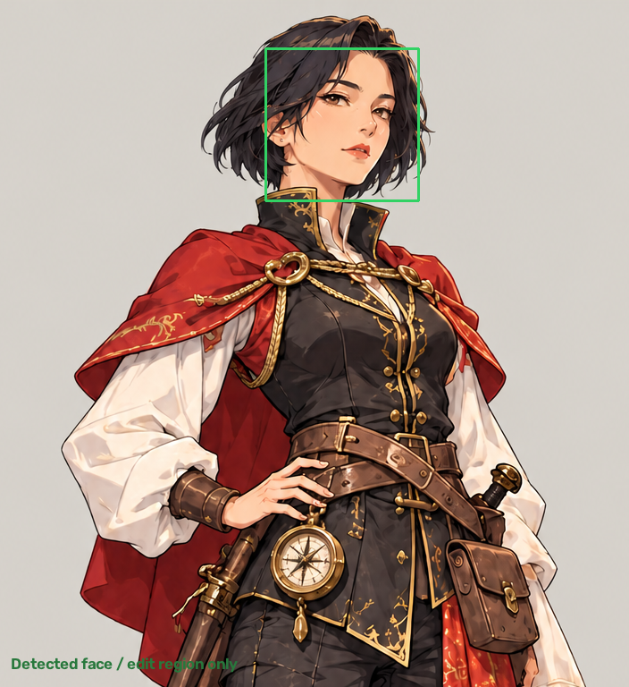

查看新版：参考视频风格的对话待机
01–04：AdvancedLivePortrait · 704 × 768 · 24 fps · 每段 2 秒。05 旧版已撤下，正在重做。查看 05 二维绑定样片先检测脸部、提取姿态与隐式关键点，再做局部驱动和插值。
保留原眨眼；肩部静止，两个白色袖口轻摆，斗篷下摆与罗盘下挂坠的摆动保留。
smile = 0.7；嘴角变化、保持、返回。可能轻微露齿，非口型同步。
低头 6° 后直接抬头，无低头停顿；恢复原姿态后留出循环间隔。
低头 6° → 抬回三分之一（仍低头 4°）→ 再次低头 6° → 恢复原姿态。两次低头均不停留。

YOLO 人脸检测：1 张脸。绿色框是检测范围，不是全身骨骼。
插件编辑与融合遮罩：白色附近允许修改，黑色区域保留原图。
隐式点不是可解释的 68 点面部标记，也不是身体骨骼。01 加入手工指定区域的二维袖口、斗篷下摆形变与挂坠旋转；02/03/04 衣物仍静止。所有片段均没有三维布料或头发物理模拟。
原始分析数据 · 原版表情验证 · 新版袖口验证 · 点头验证 · 运行方式